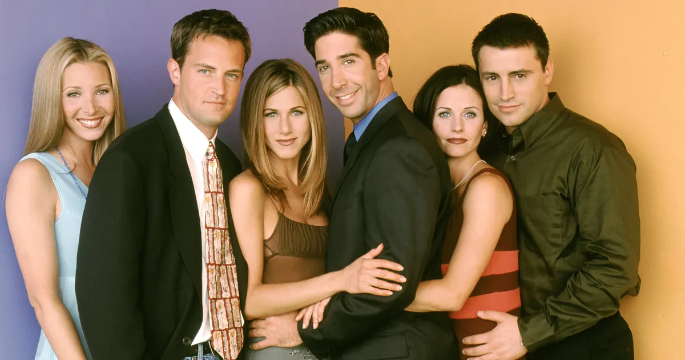

My Life

Early Life
I was born on August 19, 1969 in Williamstown, Massachusetts to my parents, Suzanne, who was a journalist, and my father John, who was an American actor. My parents split up just before my first birthday and I was raised by my mother with her new husband who was a journalist. I went to school in Ontario and became a top-ranked tennis player but later moved to Los Angeles at the age of 15.
I moved to California to live with my father and persue my dream of acting and graduating from The Buckley School in 1987. After I graduated I had been able to land my first role in the TV show, Boys Will Be Boys, from the success of the show I was able to land my first on screen role in, A Night in the Life of Jimmy Reardon.
Career
After my first on screen role and went and landed a few small roles before stumbling upon a role that would change my life. At first it was called, Six of One, which was eventually called, FRIENDS, and now initially I almost didn't get the role but eventually I landed the role of Chandler Bing. The show became highly successful and changed my life for good, it was something that I always wished for.
While I did go through addiction in the midst of filming and not remembering filming half the season, acting on the show gave me the fame I had always been longing for. I landed roles in a numerous amount of films and TV shows, getting award nominations for Friends, The West Wing, The Ron Clark Story, and more. If I hadn't moved to California with my dad to persue acting im not sure where I'd be today.
Success and Struggles
After getting roles that would change my life forever and make me 1 million dollars an episode, I went on to write my own book called, Friends, Lovers and the Big Terrible Thing. Today it is said that my networth is around 80 million and I am thankful for my first ever acting role because without it I wouldnt have a dollar to my name, I'd probably still be trying to get a grip on acting.
Although I may have been living the life, I still went through a rough time following a accident I had in 1997. I fell into addiction to multiple drugs and alcohol. I lost tons of weight and from seasons 3 to 6 of friends I don't even remember filming. I spent millions trying to better myself and entered a rehab center in 2015 and thankfully I have been sober since May of 2021.
What I've Been in:
- FRIENDS
- The Ron Clark Story
- 17 Again